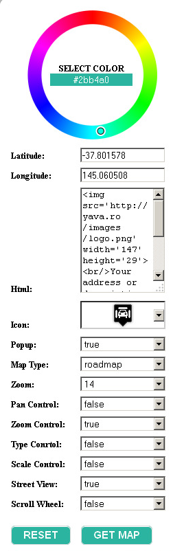
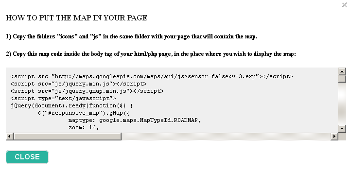
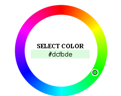
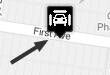
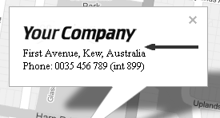
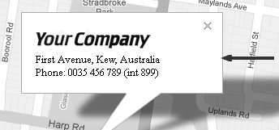
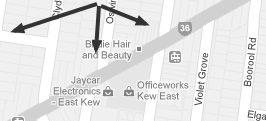
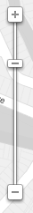
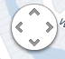
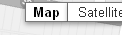

“Responsive Styled Google Maps Generator” Documentation v1.4
“Responsive Styled Google Maps Generator"
Last modified: 11/09/2013
By: greenline
Email: ramona.morea@yahoo.com
Thank you for purchasing my item. If you have any questions that are beyond the scope of this help file, please feel free to email via my user page contact form here. Thanks so much!
Table of Contents
B) Installation - top
This is a generator which creates ready-to-use, responsive, styled, google maps in UNLIMITED COLORS! You customize various map settings, then, a map is auto-generated for you. When you like the resulted map, just click a button "GET MAP" and you'll receive a code you can copy-paste in your website to display that styled map.
This generator is UNIQUE because it's the only one on the market which allows you to set practically ANY COLOR for the map. This way, you will be able to replace the classic look of google maps with a new, modern, improved one, which matches your website colors. You can also choose among 500 included map icons! What makes it also unique is the fact that the generated maps will auto-center on any screen and will also auto-center when the window is resized (most maps don't do that). At the end, when you finish the customizations, you can copy-paste the generated code to include the map in your web page.
Installation steps:
- Download on your computer the ZIP file purchased from codecanyon.net
- Extract its content in a local directory.
- Inside the folder extracted you will find two folders:documentation (contains the help file) and generator (contain the generator itself)
- Open the file index.html from the generator folder
- Customize the map settings from the panel at the right side of the page (colors, controls, etc).
- When you obtain a map you like, just click the "GET MAP" button and you will get a ready to copy-paste code which you can insert in your page to display that styled map.
- To reset the generator at its default state, you can click the RESET button.
- For the full list of possible map parameters, please see D) Configuring the map
C) Quick start guide - top
After you run the generator's index.html file, you can obtain an auto-generated map code which you can insert in your page.
First, configure the map colors, controls, etc, using the settings panel at the left of the page:

After that, just click the GET MAP button and you will see a lightbox like below, containing the instructions on how to insert that styled map in your page:

D) Configuring the map - top
The map can be customized by setting map elements to various values. The possible map elements are:
color:

latitude, longitude:

html content in marker's popup:

popup:

map type:

zoom:

pan control:

map type control:

scale control:
street view control:

scroll wheel (zoom in/out the map when mouse wheel touched):
E) Sources and Credits - top
Credits:
- jQuery gMap plugin by Sebastian Poreba: http://www.smashinglabs.pl/gmap
- Icons: http://mapicons.nicolasmollet.com/
- Using the Google Maps API you agree to their Terms of Service
F) Version History - top
11 September 2013 - version 1.4 - reduced CSS in the generated map code 18 August 2013 - version 1.3 - CSS customizations to the popup window (required by latest changes in Google Maps API) - Code format in a more readable way - Small fix to iconanchor and anchorshadow values in generated code - Update to jQuery v1.10.2 11 May 2013 - version 1.2 - Text changes
- Image paths corrections - Street view control set to true by default - Compacted the generated map code 27 April 2013 - version 1.1 - Search by address field added
- Draggable marker added
- Visual improvements (many thanks to <a href="http://codecanyon.net/user/karaziki">karaziki</a>)
- Select generated code on mouse click
- Scripts files are now local 22 April 2013 - version 1.0 - The initial version
Once again, thank you so much for purchasing this item. As I said at the beginning, I'd be glad to help you if you have any questions relating to this item. No guarantees, but I'll do my best to assist. If you have a more general question relating to the items on CodeCanyon, you might consider visiting the forums and asking your question in the "Item Discussion" section.
Green Line